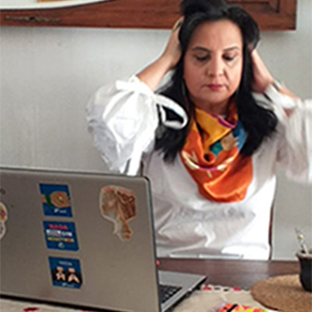
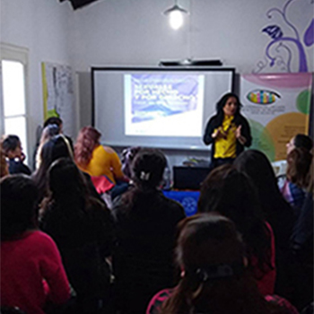

Clases, charlas y cursos
Educar y aprender
Desde 2010

¡Divertad, divertad, divertad!

Silvina Liliana Peirano (Buenos Aires, Argentina) es especialista en sexualidad y diversidad funcional. Desde 2010 administra el blog "Mitología de la sexualidad especial" y "Sex asistent, es fundadora del Centro Julia Pastrana (2015). Actualmente trabaja como docente de ESI en el Instituto superior del profesorado en educación especial (INSPEE)
Formación brindada en INESI. Paraná, Argentina
Información sobre el curso, ubicación del lugar y año
Información sobre el curso, ubicación del lugar y año
Información sobre el curso, ubicación del lugar y año
Elonce (Argentina)
Feminacida (Argentina)